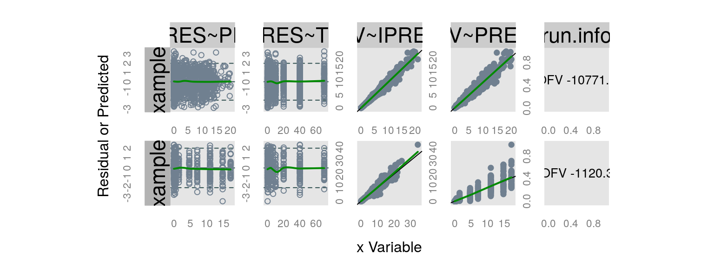

ExamplesnmxxxFunctionsqpToolkit.Rmd##
## nm.pr.> nm.params.table(run = "example1", path = getOption("qpExampleDir"))
## Parameter Estimate CV.perc SE estimated
## 1 THETA1 1.686930000 2.55967941764033 0.04318 estimated
## 2 THETA2 1.611290000 2.95483122218843 0.0476109 estimated
## 3 THETA3 0.819605000 8.53864971541169 0.0699832 estimated
## 4 THETA4 2.391610000 2.15700720435188 0.0515872 estimated
## 5 OMEGA1.1 0.165061000 16.4708198787115 0.0271869 estimated
## 6 OMEGA2.1 -0.000741979 -2803.0712459517 0.0207982 estimated
## 7 OMEGA2.2 0.131429000 23.8227484040813 0.03131 estimated
## 8 OMEGA3.1 0.012411200 240.912240556916 0.0299001 estimated
## 9 OMEGA3.2 0.015956500 223.893711026854 0.0357256 estimated
## 10 OMEGA3.3 0.187548000 38.3405848102886 0.071907 estimated
## 11 OMEGA4.1 -0.012735500 -185.120332927643 0.023576 estimated
## 12 OMEGA4.2 0.013906100 173.090945700088 0.0240702 estimated
## 13 OMEGA4.3 0.033270200 127.986005494406 0.0425812 estimated
## 14 OMEGA4.4 0.149906000 25.4973116486331 0.038222 estimated
## 15 SIGMA1.1 0.057163200 13.2438876759873 0.00757063 estimated
##
## nm.pr.> nm.params.table("example2", path = getOption("qpExampleDir"), fixed.text = "(fixed to 0)", return.all = TRUE)
## Parameter Estimate SE Eigen CondNum sd.var
## 1 THETA1 3.305220000 0.0326572 0.0258399 158.3920000 0.0000000
## 2 THETA2 3.257970000 0.0286466 0.0276883 0.0258399 0.0000000
## 3 THETA3 -0.611824000 0.00952096 0.0352403 4.0928400 0.0000000
## 4 THETA4 -0.208226000 0.00831004 0.0444284 0.0000000 0.0000000
## 5 THETA5 0.735323000 0.0391716 0.0596110 0.0000000 0.0000000
## 6 THETA6 1.139920000 0.035768 0.2052890 0.0000000 0.0000000
## 7 THETA7 0.336296000 0.0113245 0.2703130 0.0000000 0.0000000
## 8 THETA8 0.191801000 0.0103567 0.2981540 0.0000000 0.0000000
## 9 THETA9 0.694545000 0.0104684 0.4992870 0.0000000 0.0000000
## 10 THETA10 2.301570000 0.00857532 0.5624250 0.0000000 0.0000000
## 11 THETA11 0.100030000 0.00282728 0.6202310 0.0000000 0.0000000
## 12 OMEGA1.1 0.010282100 0.000968195 1.1033500 0.0000000 0.1014010
## 13 OMEGA2.1 0.000191938 0.000827503 1.3254500 0.0000000 0.0212316
## 14 OMEGA2.2 0.007948230 0.00137461 1.3571500 0.0000000 0.0891528
## 15 OMEGA3.1 0.001281790 0.00127722 1.4866100 0.0000000 0.1263650
## 16 OMEGA3.2 -0.000170245 0.00143627 1.5644400 0.0000000 -0.0190894
## 17 OMEGA3.3 0.010006800 0.003046 1.5993100 0.0000000 0.1000340
## 18 OMEGA4.1 -0.000595539 0.00100317 2.4044700 0.0000000 -0.0597246
## 19 OMEGA4.2 0.000542183 0.00109632 2.7388500 0.0000000 0.0618437
## 20 OMEGA4.3 0.002000550 0.00214226 4.0928400 0.0000000 0.2033690
## 21 OMEGA4.4 0.009670120 0.00192347 0.0000000 0.0000000 0.0983368
## 22 SIGMA1.1 1.000000000 (fixed to 0) 0.6790310 0.0000000 1.0000000
## sd.sd.var index level ord estimated CV.perc Run
## 1 0.00000e+00 1.0 THETA 1 1.0 estimated 0.988049207011939 example2
## 2 0.00000e+00 2.0 THETA 1 2.0 estimated 0.879277586963662 example2
## 3 0.00000e+00 3.0 THETA 1 3.0 estimated -1.55615994142106 example2
## 4 0.00000e+00 4.0 THETA 1 4.0 estimated -3.99087529895402 example2
## 5 0.00000e+00 5.0 THETA 1 5.0 estimated 5.3271283503984 example2
## 6 0.00000e+00 6.0 THETA 1 6.0 estimated 3.1377640536178 example2
## 7 0.00000e+00 7.0 THETA 1 7.0 estimated 3.36742036777125 example2
## 8 0.00000e+00 8.0 THETA 1 8.0 estimated 5.39971115896163 example2
## 9 0.00000e+00 9.0 THETA 1 9.0 estimated 1.5072313529001 example2
## 10 0.00000e+00 10.0 THETA 110.0 estimated 0.372585669781932 example2
## 11 0.00000e+00 11.0 THETA 111.0 estimated 2.82643207037889 example2
## 12 4.77410e-03 1.1 OMEGA 2 1.1 estimated 9.41631573316735 example2
## 13 9.06201e-02 2.1 OMEGA 2 2.1 estimated 431.130365013702 example2
## 14 7.70929e-03 2.2 OMEGA 2 2.2 estimated 17.2945423069035 example2
## 15 1.14875e-01 3.1 OMEGA 2 3.1 estimated 99.6434673386436 example2
## 16 1.62476e-01 3.2 OMEGA 2 3.2 estimated -843.648858997327 example2
## 17 1.52248e-02 3.3 OMEGA 2 3.3 estimated 30.4393012751329 example2
## 18 1.04157e-01 4.1 OMEGA 2 4.1 estimated -168.447406467083 example2
## 19 1.21953e-01 4.2 OMEGA 2 4.2 estimated 202.204790633421 example2
## 20 1.75727e-01 4.3 OMEGA 2 4.3 estimated 107.083552023194 example2
## 21 9.78003e-03 4.4 OMEGA 2 4.4 estimated 19.8908596790939 example2
## 22 1.00000e+10 1.1 SIGMA 3 1.1 fixed (fixed to 0) example2##
## gt.tht> get.theta("example1", path = getOption("qpExampleDir"), fixed.text = "(fixed to 0)")
## Parameter Estimate CV.perc SE estimated
## 1 THETA1 1.686930 2.55967941764033 0.04318 estimated
## 2 THETA2 1.611290 2.95483122218843 0.0476109 estimated
## 3 THETA3 0.819605 8.53864971541169 0.0699832 estimated
## 4 THETA4 2.391610 2.15700720435188 0.0515872 estimated##
## get.mg> get.omega("example2", path = getOption("qpExampleDir"), fixed.text = "(fixed to 0)")
## Parameter Estimate CV.perc SE estimated
## 12 OMEGA1.1 0.010282100 9.41631573316735 0.000968195 estimated
## 13 OMEGA2.1 0.000191938 431.130365013702 0.000827503 estimated
## 14 OMEGA2.2 0.007948230 17.2945423069035 0.00137461 estimated
## 15 OMEGA3.1 0.001281790 99.6434673386436 0.00127722 estimated
## 16 OMEGA3.2 -0.000170245 -843.648858997327 0.00143627 estimated
## 17 OMEGA3.3 0.010006800 30.4393012751329 0.003046 estimated
## 18 OMEGA4.1 -0.000595539 -168.447406467083 0.00100317 estimated
## 19 OMEGA4.2 0.000542183 202.204790633421 0.00109632 estimated
## 20 OMEGA4.3 0.002000550 107.083552023194 0.00214226 estimated
## 21 OMEGA4.4 0.009670120 19.8908596790939 0.00192347 estimated##
## gt.sgm> get.sigma("example2", path = getOption("qpExampleDir"), fixed.text = "(fixed to 0)")
## Parameter Estimate CV.perc SE estimated
## 22 SIGMA1.1 1 (fixed to 0) (fixed to 0) fixed##
## prcs.T> process.parTable(
## prcs.T+ nm = nm.params.table(run = "example1", path = getOption("qpExampleDir"), runIndex = 1)
## prcs.T+ , transformations = list(log=c(1:12))
## prcs.T+ , missing.format = "...."
## prcs.T+ )
## Parameter Estimate CV.perc SE estimated CI95
## 1 $\\theta_{1}$ 5.40 .... .... estimated (4.96 - 5.88)
## 2 $\\theta_{2}$ 5.01 .... .... estimated (4.56 - 5.5)
## 3 $\\theta_{3}$ 2.27 .... .... estimated (1.98 - 2.6)
## 4 $\\theta_{4}$ 10.9 .... .... estimated (9.88 - 12.1)
## 5 $\\omega_{1.1}$ 1.18 .... .... estimated (1.12 - 1.24)
## 6 $\\omega_{2.1}$ 0.999 .... .... estimated (0.959 - 1.04)
## 7 $\\omega_{2.2}$ 1.14 .... .... estimated (1.07 - 1.21)
## 8 $\\omega_{3.1}$ 1.01 .... .... estimated (0.955 - 1.07)
## 9 $\\omega_{3.2}$ 1.02 .... .... estimated (0.947 - 1.09)
## 10 $\\omega_{3.3}$ 1.21 .... .... estimated (1.05 - 1.39)
## 11 $\\omega_{4.1}$ 0.987 .... .... estimated (0.943 - 1.03)
## 12 $\\omega_{4.2}$ 1.01 .... .... estimated (0.967 - 1.06)
## 13 $\\omega_{4.3}$ 0.0333 128 0.0426 estimated (-0.0502 - 0.117)
## 14 $\\omega_{4.4}$ 0.150 25.5 0.0382 estimated (0.075 - 0.225)
## 15 $\\sigma_{1.1}$ 0.0572 13.2 0.00757 estimated (0.0423 - 0.072)
## transformed
## 1 log
## 2 log
## 3 log
## 4 log
## 5 log
## 6 log
## 7 log
## 8 log
## 9 log
## 10 log
## 11 log
## 12 log
## 13 no
## 14 no
## 15 no
##
## prcs.T> process.parTable(
## prcs.T+ nm = nm.params.table(run = "example1", path = getOption("qpExampleDir"))
## prcs.T+ , transformations = list(logit=c(7,9))
## prcs.T+ , plain = TRUE
## prcs.T+ , missing.format = "...."
## prcs.T+ )
## Parameter Estimate CV.perc SE estimated CI95
## 1 THETA1 1.69 2.6 0.0432 estimated (1.6 - 1.77)
## 2 THETA2 1.61 3 0.0476 estimated (1.52 - 1.7)
## 3 THETA3 0.820 8.5 0.07 estimated (0.682 - 0.957)
## 4 THETA4 2.39 2.2 0.0516 estimated (2.29 - 2.49)
## 5 OMEGA1.1 0.165 16.5 0.0272 estimated (0.112 - 0.218)
## 6 OMEGA2.1 -0.000742 2803.1 0.0208 estimated (-0.0415 - 0.04)
## 7 OMEGA2.2 0.533 .... .... estimated (0.518 - 0.548)
## 8 OMEGA3.1 0.0124 240.9 0.0299 estimated (-0.0462 - 0.071)
## 9 OMEGA3.2 0.504 .... .... estimated (0.486 - 0.521)
## 10 OMEGA3.3 0.188 38.3 0.0719 estimated (0.0466 - 0.328)
## 11 OMEGA4.1 -0.0127 185.1 0.0236 estimated (-0.0589 - 0.0335)
## 12 OMEGA4.2 0.0139 173.1 0.0241 estimated (-0.0333 - 0.0611)
## 13 OMEGA4.3 0.0333 128 0.0426 estimated (-0.0502 - 0.117)
## 14 OMEGA4.4 0.150 25.5 0.0382 estimated (0.075 - 0.225)
## 15 SIGMA1.1 0.0572 13.2 0.00757 estimated (0.0423 - 0.072)
## transformed
## 1 no
## 2 no
## 3 no
## 4 no
## 5 no
## 6 no
## 7 logit
## 8 no
## 9 logit
## 10 no
## 11 no
## 12 no
## 13 no
## 14 no
## 15 no##
## prcss.> rr = read.runrec(filename = "AAruninfo.txt", path = file.path(getOption("qpExampleDir")))
##
## prcss.> process.runrec(rr)
## Run Ref OFV $\\Delta$OFV CondNum Minimization
## 1 1 0 -1121.0 <NA> 27 Successful
## 2 2 1 -10772.1 \\textbf{\\color{blue}{-9651.1}} 158 Successful
## Description action
## 1 2 compartment model ~
## 2 Covariate Model CL and V with Gender and Age accepted
##
## prcss.> process.runrec(rr, plain = TRUE)
## Run Ref OFV dOFV CondNum Minimization
## 1 1 0 -1121.0 <NA> 27 Successful
## 2 2 1 -10772.1 -9651.1 158 Successful
## Description action
## 1 2 compartment model ~
## 2 Covariate Model CL and V with Gender and Age accepted##
## nm.p2.> nm.parse2r.operators(c("DOSE.GT.10","AMT.LE.10","ID.EQ.1000","SEX!=0"))
## [1] "DOSE>10" "AMT<=10" "ID==1000" "SEX!=0"##
## nm.p..> nm.parse.control.stream("example1", path = getOption("qpExampleDir"), file.ext = ".ctl")
## $PROB
## [1] "$PROB RUN# Example 1 (from samp5l)"
## [2] ";; 1. Based on:0"
## [3] ";; 2. Description:"
## [4] ";; 2 compartment model"
## [5] ";; 3. Label:"
## [6] ";; 2CMT"
## [7] ";; 4. Structural model:"
## [8] ";; ADVAN3 TRANS4"
## [9] ";; 5. Covariate model:"
## [10] ";; None"
## [11] ";; 6. Inter-individual variability:"
## [12] ";; CL, V1, Q, V2"
## [13] ";; 7. Inter-occasion variability:"
## [14] ";; None"
## [15] ";; 8. Residual variability:"
## [16] ";; proportional"
## [17] ";; 9. Estimation:"
## [18] ";; FOCE INTER, SAEM, BAYES, IMP"
## [19] "; carries over to the next $EST statement, within a $PROB). The SAEM is a Monte Carlo process,"
## [20] "; so setting the SEED assures repeatability of results. Each iteration obtains only 2 Monte"
## [21] "; Carlo samples ISAMPLE), so they are very fast. But many iterations are needed, so PRINT only"
## [22] "; every 100th iteration. After the stochastic phase, 500 accumulation iterations will be"
## [23] "; Performed (NITER), to obtain good parameters estimates with little stochastic noise."
## [24] "; As a new FILE has not been given, the SAEM results will append to example1.ext."
##
## $INPUT
## [1] "$INPUT C SET ID JID TIME DV=CONC AMT=DOSE RATE EVID MDV CMT CLX V1X QX V2X SDIX SDSX"
##
## $DATA
## [1] "$DATA example1.csv IGNORE=C"
##
## $SUBROUTINES
## [1] "$SUBROUTINES ADVAN3 TRANS4"
## [2] ";NTHETA=number of Thetas to be estimated"
## [3] ";NETA=number of Etas to be estimated (and to be described by NETAxBETA OMEGA matrix)"
## [4] ";NTHP=number of thetas which have a prior"
## [5] ";NETP=number of Omegas with prior"
## [6] ";Prior information is important for MCMC Bayesian analysis, not necessary for maximization"
## [7] "; methods"
##
## $PRIOR
## [1] "$PRIOR NWPRI NTHETA=4, NETA=4, NTHP=4, NETP=4"
##
## $PK
## [1] "$PK"
## [2] "; The thetas are MU modeled. Best that there is a linear relationship between THETAs and Mus"
## [3] "; The linear MU modeling of THETAS allows them to be efficiently Gibbs sampled."
## [4] "MU_1=THETA(1)"
## [5] "MU_2=THETA(2)"
## [6] "MU_3=THETA(3)"
## [7] "MU_4=THETA(4)"
## [8] "CL=DEXP(MU_1+ETA(1))"
## [9] "V1=DEXP(MU_2+ETA(2))"
## [10] "Q=DEXP(MU_3+ETA(3))"
## [11] "V2=DEXP(MU_4+ETA(4))"
## [12] "S1=V1"
## [13] "STRT = 0"
## [14] "IF(ID.GT.50) STRT = 1"
##
## $ERROR
## [1] "$ERROR" "IPRED = F"
## [3] "Y = F + F*EPS(1)" "; Initial values of THETA"
##
## $THETA
## [1] "$THETA "
## [2] "(0.001, 2.0) ;[LN(CL)]"
## [3] "(0.001, 2.0) ;[LN(V1)]"
## [4] "(0.001, 2.0) ;[LN(Q)]"
## [5] "(0.001, 2.0) ;[LN(V2)]"
## [6] ";INITIAL values of OMEGA"
## [7] "$THETA (2.0 FIX) (2.0 FIX) (2.0 FIX) (2.0 FIX)"
## [8] "; Variance to prior information of THETAS. Because variances are very large, this"
## [9] "; means that the prior information to the THETAS is highly uninformative."
## [10] "$THETA (4 FIX)"
## [11] "; The first analysis is iterative two-stage, maximum of 500 iterations (NITER), iteration results"
## [12] "; are printed every 5 iterations, gradient precision (SIGL) is 4. Termination is tested on all of"
## [13] "; the population parameters (CTYPE=3), and for less then 2 significant digits change (NSIG)."
## [14] "; Prior information is not necessary for ITS, so NOPRIOR=1. The intermediate and final results"
## [15] "; of the ITS method will be recoded in row/column format in example1.ext"
##
## $OMEGA
## [1] "$OMEGA BLOCK(4)"
## [2] "0.15 ;[P]"
## [3] "0.01 ;[F]"
## [4] "0.15 ;[P]"
## [5] "0.01 ;[F]"
## [6] "0.01 ;[F]"
## [7] "0.15 ;[P]"
## [8] "0.01 ;[F]"
## [9] "0.01 ;[F]"
## [10] "0.01 ;[F]"
## [11] "0.15 ;[P]"
## [12] ";Initial value of SIGMA"
## [13] "$OMEGA BLOCK(4)"
## [14] "10000 FIX "
## [15] "0.00 10000"
## [16] "0.00 0.00 10000"
## [17] "0.00 0.00 0.0 10000"
## [18] "; Prior information to the OMEGAS."
## [19] "$OMEGA BLOCK(4)"
## [20] "0.2 FIX "
## [21] "0.0 0.2 "
## [22] "0.0 0.0 0.2"
## [23] "0.0 0.0 0.0 0.2"
## [24] ";Degrees of freedom to prior OMEGA matrix. Because degrees of freedom is very low, equal to the"
## [25] "; the dimension of the prior OMEGA, this means that the prior information to the OMEGAS is"
## [26] "; highly uninformative"
##
## $SIGMA
## [1] "$SIGMA " "(0.6 ) ;[P]"
## [3] "; Prior information of THETAS"
##
## $EST
## [1] "$EST METHOD=ITS INTERACTION FILE=example1.ext NITER=500 PRINT=5 NOABORT SIGL=4 CTYPE=3 CITER=10 "
## [2] " CALPHA=0.05 NOPRIOR=1 NSIG=2"
## [3] "; The results of ITS are used as the initial values for the SAEM method. A maximum of 3000"
## [4] "; stochastic iterations (NBURN) is requested, but may end early if statistical test determines"
## [5] "; that variations in all parameters is stationary (note that any settings from the previous $EST"
## [6] "; carries over to the next $EST statement, within a $PROB). The SAEM is a Monte Carlo process,"
## [7] "; so setting the SEED assures repeatability of results. Each iteration obtains only 2 Monte"
## [8] "; Carlo samples ISAMPLE), so they are very fast. But many iterations are needed, so PRINT only"
## [9] "; every 100th iteration. After the stochastic phase, 500 accumulation iterations will be"
## [10] "; Performed (NITER), to obtain good parameters estimates with little stochastic noise."
## [11] "; As a new FILE has not been given, the SAEM results will append to example1.ext."
## [12] "$EST METHOD=SAEM INTERACTION NBURN=3000 NITER=500 PRINT=100 SEED=1556678 ISAMPLE=2"
## [13] "; After the SAEM method, obtain good estimates of the marginal density (objective function),"
## [14] "; along with good estimates of the standard errors. This is best done with importance sampling"
## [15] "; (IMP), performing the expectation step only (EONLY=1), so that final population parameters"
## [16] "; remain at the final SAEM result. Five iterations (NITER) should allow the importance sampling"
## [17] "; proposal density to become stationary. This is observed by the objective function settling "
## [18] "; to a particular value (with some stochastic noise). By using 3000 Monte Carlo samples"
## [19] "; (ISAMPLE), this assures a precise assessment of standard errors."
## [20] "$EST METHOD=IMP MAPITER=0 INTERACTION EONLY=1 NITER=5 ISAMPLE=3000 PRINT=1 SIGL=8 NOPRIOR=1"
## [21] "; The Bayesian analysis is performed. While 10000 burn-in"
## [22] "; iterations are requested as a maximum, because the termination test is on (CTYPE<>0, set at the"
## [23] "; first $EST statement), and because the initial parameters are at the SAEM result, which is the"
## [24] "; maximum likelihood position, the analysis should settle down to a stationary distribution in"
## [25] "; several hundred iterations. Prior information is also used to facilitate Bayesian analysis."
## [26] "; The individual Bayesian iteration results are important, and may be need for post-processing"
## [27] "; analysis. So specify a separate FILE for the Bayesian analysis. "
## [28] "$EST METHOD=BAYES INTERACTION FILE=example1.txt NBURN=10000 NITER=10000 PRINT=100 NOPRIOR=0"
## [29] "; Just for old-times sake, let?s see what the traditional FOCE method will give us. "
## [30] "; And, remember to introduce a new FILE, so its results won?t append to our Bayesian FILE. "
## [31] "; Appending to example1.ext with the EM methods is fine."
## [32] "$EST METHOD=COND INTERACTION MAXEVAL=9999 NSIG=3 SIGL=10 PRINT=5 NOABORT NOPRIOR=1"
## [33] " FILE=example1.ext"
## [34] "; Time for the standard error results. You may request a more precise gradient precision (SIGL)"
## [35] "; that differed from that used during estimation."
##
## $COV
## [1] "$COV MATRIX=R PRINT=E UNCONDITIONAL SIGL=12"
## [2] "; Print out results in tables. Include some of the new weighted residual types"
##
## $TABLE
## [1] "$TABLE ID TIME DV IPRED PRED EVID RES WRES CPRED CWRES EPRED ERES EWRES NOAPPEND ONEHEADER "
## [2] " FILE=example1.sdtab NOPRINT"
## [3] "$TABLE ID CL V1 Q V2 ETA1 ETA2 ETA3 ETA4 NOAPPEND ONEHEADER NOPRINT FILE=example1.patab"##
## nm.cm.> nm.compare.plot(runs = c("example1","example2")
## nm.cm.+ , path =getOption("qpExampleDir")
## nm.cm.+ , alias = list(DV = "CONC",TIME = "TIME")
## nm.cm.+ , keep.cols = Cs(ID,DV,CWRES,PRED,IPRED,TIME,EVID)
## nm.cm.+ , text.size = 0.6
## nm.cm.+ )
## -1120.262 -10771.86
##
## nm.cv.> nm.unzip(run="example1", extension=".cov", path = file.path(getOption("qpExampleDir"),"example1"))
##
## nm.cv.> run1.covmat = nm.covmat.extract("example1", path = getOption("qpExampleDir"))
##
## nm.cv.> names(run1.covmat)
## [1] "Iterative Two Stage (No Prior)"
## [2] "Stochastic Approximation Expectation-Maximization (No Prior)"
## [3] "Objective Function Evaluation by Importance Sampling (No Prior)"
## [4] "MCMC Bayesian Analysis"
## [5] "First Order Conditional Estimation with Interaction (No Prior)"
##
## nm.cv.> names(run1.covmat[[1]])
## [1] "THETA1 " "THETA2 " "THETA3 " "THETA4 "
## [5] "SIGMA(1,1) " "OMEGA(1,1) " "OMEGA(2,1) " "OMEGA(2,2) "
## [9] "OMEGA(3,1) " "OMEGA(3,2) " "OMEGA(3,3) " "OMEGA(4,1) "
## [13] "OMEGA(4,2) " "OMEGA(4,3) " "OMEGA(4,4) "
##
## nm.cv.> lapply(run1.covmat, dim)
## $`Iterative Two Stage (No Prior)`
## [1] 15 15
##
## $`Stochastic Approximation Expectation-Maximization (No Prior)`
## [1] 15 15
##
## $`Objective Function Evaluation by Importance Sampling (No Prior)`
## [1] 15 15
##
## $`MCMC Bayesian Analysis`
## [1] 15 15
##
## $`First Order Conditional Estimation with Interaction (No Prior)`
## [1] 15 15
##
##
## nm.cv.> file.remove( file.path(getOption("qpExampleDir"),"example1/example1.cov"))
## [1] TRUE##
## nm.cr.> nm.unzip(run="example1", extension=".cor", path = file.path(getOption("qpExampleDir"),"example1"))
##
## nm.cr.> run1.cormat = nm.cormat.extract("example1", path = getOption("qpExampleDir"))
##
## nm.cr.> names(run1.cormat)
## [1] "Iterative Two Stage (No Prior)"
## [2] "Stochastic Approximation Expectation-Maximization (No Prior)"
## [3] "Objective Function Evaluation by Importance Sampling (No Prior)"
## [4] "MCMC Bayesian Analysis"
## [5] "First Order Conditional Estimation with Interaction (No Prior)"
##
## nm.cr.> names(run1.cormat[[1]])
## [1] "THETA1 " "THETA2 " "THETA3 " "THETA4 "
## [5] "SIGMA(1,1) " "OMEGA(1,1) " "OMEGA(2,1) " "OMEGA(2,2) "
## [9] "OMEGA(3,1) " "OMEGA(3,2) " "OMEGA(3,3) " "OMEGA(4,1) "
## [13] "OMEGA(4,2) " "OMEGA(4,3) " "OMEGA(4,4) "
##
## nm.cr.> lapply(run1.cormat, dim)
## $`Iterative Two Stage (No Prior)`
## [1] 15 15
##
## $`Stochastic Approximation Expectation-Maximization (No Prior)`
## [1] 15 15
##
## $`Objective Function Evaluation by Importance Sampling (No Prior)`
## [1] 15 15
##
## $`MCMC Bayesian Analysis`
## [1] 15 15
##
## $`First Order Conditional Estimation with Interaction (No Prior)`
## [1] 15 15
##
##
## nm.cr.> file.remove( file.path(getOption("qpExampleDir"),"example1/example1.cor"))
## [1] TRUE##
## nm.pr.> ## the code below works if a number of scmlog.txt files are in folder NONMEM/scm files
## nm.pr.> myPath = file.path(getOption("qpExampleDir"),"scm_example2")
##
## nm.pr.> scm = nm.process.scm(myPath)
##
## nm.pr.> names(scm)
## [1] "full.scm" "summary" "model" "steps" "scm.latex"
##
## nm.pr.> scm$summary
## MODEL TEST BASE.OFV NEW.OFV TEST OFV.DROP GOAL dDF
## 1 CLGNDR-2 PVAL -5494.54612 -9557.26778 4062.72165 > 6.63490 1
## 2 CLAGE-5 PVAL -9557.26778 -9746.45167 189.18389 > 6.63490 1
## 3 V1AGE-5 PVAL -9746.45167 -10176.09933 429.64766 > 6.63490 1
## 4 V1GNDR-2 PVAL -10176.09933 -10195.27729 19.17797 > 6.63490 1
## SIGNIFICANT PVAL
## 1 YES! 0.00e+000
## 2 YES! 4.79e-043
## 3 YES! 0.00e+000
## 4 YES! 0.000012
##
## nm.pr.> # populate an appendix with scm output
## nm.pr.> print(xtable(scm$scm.latex
## nm.pr.+ , caption = "Full Stepwise Covariate Building output"
## nm.pr.+ , label = 'Tab:scmfull')
## nm.pr.+ , sanitize.text.function = function(x)x
## nm.pr.+ , include.rownames = FALSE
## nm.pr.+ , size = "small"
## nm.pr.+ , caption.placement ="top"
## nm.pr.+ , booktabs = TRUE
## nm.pr.+ , tabular.environment = "longtable"
## nm.pr.+ , floating = FALSE
## nm.pr.+ # , only.contents = TRUE
## nm.pr.+ )
## % latex table generated in R 3.5.1 by xtable 1.8-3 package
## % Fri Mar 1 05:59:31 2019
## \begingroup\small
## \begin{longtable}{llllllll}
## \caption{Full Stepwise Covariate Building output} \\
## \toprule
## MODEL & OFV$_{base}$ & OFV$_{test}$ & $\Delta$OFV & GOAL & $\Delta$DF & SIGNIFICANT & P value \\
## \midrule
## $\textit{START FORWARD STEP 1}$ & ~ & ~ & ~ & $~$ ~ & ~ & ~ & ~ \\
## CLAGE-5 & $\phantom{0}$-5494.5 & $\phantom{0}$-8791.9 & $\phantom{}$3297.3 & $>$ 6.63 & 1 & YES! & $<$0.0001 \\
## CLGNDR-2 & $\phantom{0}$-5494.5 & $\phantom{0}$-9557.3 & $\phantom{}$4062.7 & $>$ 6.63 & 1 & YES! & $<$0.0001 \\
## QAGE-5 & $\phantom{0}$-5494.5 & $\phantom{0}$-6123 & $\phantom{0}$628.5 & $>$ 6.63 & 1 & YES! & $<$0.0001 \\
## QGNDR-2 & $\phantom{0}$-5494.5 & $\phantom{0}$-8789.9 & $\phantom{}$3295.4 & $>$ 6.63 & 1 & YES! & $<$0.0001 \\
## V1AGE-5 & $\phantom{0}$-5494.5 & $\phantom{0}$-9145.8 & $\phantom{}$3651.3 & $>$ 6.63 & 1 & YES! & $<$0.0001 \\
## V1GNDR-2 & $\phantom{0}$-5494.5 & $\phantom{0}$-9049.8 & $\phantom{}$3555.3 & $>$ 6.63 & 1 & YES! & $<$0.0001 \\
## V2AGE-5 & $\phantom{0}$-5494.5 & $\phantom{0}$-8810.1 & $\phantom{}$3315.6 & $>$ 6.63 & 1 & YES! & $<$0.0001 \\
## V2GNDR-2 & $\phantom{0}$-5494.5 & $\phantom{0}$-8790.2 & $\phantom{}$3295.7 & $>$ 6.63 & 1 & YES! & $<$0.0001 \\
## $\textit{ADDED CL-GNDR-2}$ & ~ & ~ & ~ & $~$ ~ & ~ & ~ & ~ \\
## \cmidrule{2-8}% & ~ & ~ & ~ & $~$ ~ & ~ & ~ & ~ \\
## $\textit{START FORWARD STEP 2}$ & ~ & ~ & ~ & $~$ ~ & ~ & ~ & ~ \\
## CLAGE-5 & $\phantom{0}$-9557.3 & $\phantom{0}$-9746.5 & $\phantom{0}$189.2 & $>$ 6.63 & 1 & YES! & $<$0.0001 \\
## QAGE-5 & $\phantom{0}$-9557.3 & $\phantom{0}$-9560 & $\phantom{000}$2.8 & $>$ 6.63 & 1 & & 0.0960 \\
## QGNDR-2 & $\phantom{0}$-9557.3 & $\phantom{0}$-9559.5 & $\phantom{000}$2.2 & $>$ 6.63 & 1 & & 0.1368 \\
## V1AGE-5 & $\phantom{0}$-9557.3 & $\phantom{0}$-9658.2 & $\phantom{0}$100.9 & $>$ 6.63 & 1 & YES! & $<$0.0001 \\
## V1GNDR-2 & $\phantom{0}$-9557.3 & $\phantom{0}$-9565.9 & $\phantom{000}$8.6 & $>$ 6.63 & 1 & YES! & 0.0033 \\
## V2AGE-5 & $\phantom{0}$-9557.3 & $\phantom{0}$-9570.1 & $\phantom{00}$12.8 & $>$ 6.63 & 1 & YES! & 0.0003 \\
## V2GNDR-2 & $\phantom{0}$-9557.3 & $\phantom{0}$-9557.3 & $\phantom{000}$0 & $>$ 6.63 & 1 & & 0.9513 \\
## $\textit{ADDED CL-AGE-5}$ & ~ & ~ & ~ & $~$ ~ & ~ & ~ & ~ \\
## \cmidrule{2-8}% & ~ & ~ & ~ & $~$ ~ & ~ & ~ & ~ \\
## $\textit{START FORWARD STEP 3}$ & ~ & ~ & ~ & $~$ ~ & ~ & ~ & ~ \\
## QAGE-5 & $\phantom{0}$-9746.5 & $\phantom{0}$-9746.7 & $\phantom{000}$0.3 & $>$ 6.63 & 1 & & 0.6168 \\
## QGNDR-2 & $\phantom{0}$-9746.5 & $\phantom{0}$-9748.5 & $\phantom{000}$2.1 & $>$ 6.63 & 1 & & 0.1507 \\
## V1AGE-5 & $\phantom{0}$-9746.5 & $\phantom{}$-10176.1 & $\phantom{0}$429.6 & $>$ 6.63 & 1 & YES! & $<$0.0001 \\
## V1GNDR-2 & $\phantom{0}$-9746.5 & $\phantom{0}$-9752.9 & $\phantom{000}$6.4 & $>$ 6.63 & 1 & & 0.0112 \\
## V2AGE-5 & $\phantom{0}$-9746.5 & $\phantom{0}$-9771.7 & $\phantom{00}$25.2 & $>$ 6.63 & 1 & YES! & $<$0.0001 \\
## V2GNDR-2 & $\phantom{0}$-9746.5 & $\phantom{0}$-9746.5 & $\phantom{000}$0 & $>$ 6.63 & 1 & & 0.8842 \\
## $\textit{ADDED V1-AGE-5}$ & ~ & ~ & ~ & $~$ ~ & ~ & ~ & ~ \\
## \cmidrule{2-8}% & ~ & ~ & ~ & $~$ ~ & ~ & ~ & ~ \\
## $\textit{START FORWARD STEP 4}$ & ~ & ~ & ~ & $~$ ~ & ~ & ~ & ~ \\
## QAGE-5 & $\phantom{}$-10176.1 & $\phantom{}$-10176.1 & $\phantom{000}$0 & $>$ 6.63 & 1 & & 0.9762 \\
## QGNDR-2 & $\phantom{}$-10176.1 & $\phantom{}$-10177.8 & $\phantom{000}$1.7 & $>$ 6.63 & 1 & & 0.1956 \\
## V1GNDR-2 & $\phantom{}$-10176.1 & $\phantom{}$-10195.3 & $\phantom{00}$19.2 & $>$ 6.63 & 1 & YES! & $<$0.0001 \\
## V2AGE-5 & $\phantom{}$-10176.1 & $\phantom{}$-10176.9 & $\phantom{000}$0.8 & $>$ 6.63 & 1 & & 0.3789 \\
## V2GNDR-2 & $\phantom{}$-10176.1 & $\phantom{}$-10176.2 & $\phantom{000}$0.1 & $>$ 6.63 & 1 & & 0.7180 \\
## $\textit{ADDED V1-GNDR-2}$ & ~ & ~ & ~ & $~$ ~ & ~ & ~ & ~ \\
## \cmidrule{2-8}% & ~ & ~ & ~ & $~$ ~ & ~ & ~ & ~ \\
## $\textit{START FORWARD STEP 5}$ & ~ & ~ & ~ & $~$ ~ & ~ & ~ & ~ \\
## QAGE-5 & $\phantom{}$-10195.3 & $\phantom{}$-10195.3 & $\phantom{000}$0 & $>$ 6.63 & 1 & & 0.9578 \\
## QGNDR-2 & $\phantom{}$-10195.3 & $\phantom{}$-10197.8 & $\phantom{000}$2.5 & $>$ 6.63 & 1 & & 0.1126 \\
## V2AGE-5 & $\phantom{}$-10195.3 & $\phantom{}$-10195.9 & $\phantom{000}$0.6 & $>$ 6.63 & 1 & & 0.4383 \\
## V2GNDR-2 & $\phantom{}$-10195.3 & $\phantom{}$-10195.8 & $\phantom{000}$0.5 & $>$ 6.63 & 1 & & 0.4598 \\
## $\textit{NOTHING ADDED}$ & ~ & ~ & ~ & $~$ ~ & ~ & ~ & ~ \\
## \cmidrule{2-8}% & ~ & ~ & ~ & $~$ ~ & ~ & ~ & ~ \\
## $\textit{START BACKWARD STEP 1}$ & ~ & ~ & ~ & $~$ ~ & ~ & ~ & ~ \\
## CLAGE-1 & $\phantom{}$-10195.3 & $\phantom{0}$-9671.9 & $\phantom{}$-523.4 & $>$ -10.83 & -1 & & $<$0.0001 \\
## CLGNDR-1 & $\phantom{}$-10195.3 & $\phantom{0}$-9250.3 & $\phantom{}$-945 & $>$ -10.83 & -1 & & $<$0.0001 \\
## V1AGE-1 & $\phantom{}$-10195.3 & $\phantom{0}$-9752.9 & $\phantom{}$-442.4 & $>$ -10.83 & -1 & & $<$0.0001 \\
## V1GNDR-1 & $\phantom{}$-10195.3 & $\phantom{}$-10169 & $\phantom{0}$-26.3 & $>$ -10.83 & -1 & & $<$0.0001 \\
## $\textit{NOTHING REMOVED}$ & ~ & ~ & ~ & $~$ ~ & ~ & ~ & ~ \\
## \cmidrule{2-8}% & ~ & ~ & ~ & $~$ ~ & ~ & ~ & ~ \\
## \bottomrule
## \label{Tab:scmfull}
## \end{longtable}
## \endgroup##
## nm.rnt> nm.runtime(run = "example1", path = getOption("qpExampleDir"))
## $`Iterative Two Stage (No Prior)`
## [1] "Estimation: 0h" "Covariance Step: 0h" "Total: 0h"
##
## $`Stochastic Approximation Expectation-Maximization (No Prior)`
## [1] "Estimation: 0.01h" "Covariance Step: 0h" "Total: 0.01h"
##
## $`Objective Function Evaluation by Importance Sampling (No Prior)`
## [1] "Estimation: 0h" "Covariance Step: 0h" "Total: 0h"
##
## $`MCMC Bayesian Analysis`
## [1] "Estimation: 0.04h" "Covariance Step: 0h" "Total: 0.04h"
##
## $`First Order Conditional Estimation with Interaction (No Prior)`
## [1] "Estimation: 0h" "Covariance Step: 0h" "Total: 0h"##
## nm.rd.> myVPC = nm.read.vpc(path = file.path(getOption("qpExampleDir"), "vpc_final_strt"))
##
## nm.rd.> unique(myVPC$vpc$strata)
## [1] "STRT == 0" "STRT == 1"
##
## nm.rd.> unique(myVPC$obs$strata)
## [1] "STRT == 0" "STRT == 1"
##
## nm.rd.> # they match nicely
## nm.rd.>
## nm.rd.>
## nm.rd.>##
## nm.xt.> tmp = nm.extract.xml("example2", path = getOption("qpExampleDir"))
## extraction of example2.xml complete.
##
## nm.xt.> names(tmp)
## [1] "fixed" "fixedse"
## [3] "omega" "omegase"
## [5] "sigma" "sigmase"
## [7] "covariance" "correlation"
## [9] "table" "eigenvalues"
## [11] "etabar" "etabarse"
## [13] "etabarpval" "etashrink"
## [15] "epsshrink" "estimation.method"
## [17] "parallel_est" "monitor"
## [19] "termination_status" "termination_information"
## [21] "estimation_elapsed_time" "covariance_elapsed_time"
## [23] "final_objective_function" "final_objective_function_text"
## [25] "final_objective_function_std"
##
## nm.xt.> tmp$final_objective_function
## $`Iterative Two Stage (No Prior)`
## [1] -10771.86
##
## $`Importance Sampling (No Prior)`
## [1] -10783.92
##
## $`Stochastic Approximation Expectation-Maximization (No Prior)`
## [1] -19993.88
##
## $`Objective Function Evaluation by Importance Sampling (No Prior)`
## [1] -10777.68
##
## $`MCMC Bayesian Analysis`
## [1] -19185.25
##
## $`First Order Conditional Estimation with Interaction (No Prior)`
## [1] -10772.14
##
##
## nm.xt.> tmp$table
## $`Iterative Two Stage (No Prior)`
## Parameter Estimate CV.perc SE estimated
## 1 THETA1 3.305220000 0.988049207011939 0.0326572 estimated
## 2 THETA2 3.257970000 0.879277586963662 0.0286466 estimated
## 3 THETA3 -0.611824000 -1.55615994142106 0.00952096 estimated
## 4 THETA4 -0.208226000 -3.99087529895402 0.00831004 estimated
## 5 THETA5 0.735323000 5.3271283503984 0.0391716 estimated
## 6 THETA6 1.139920000 3.1377640536178 0.035768 estimated
## 7 THETA7 0.336296000 3.36742036777125 0.0113245 estimated
## 8 THETA8 0.191801000 5.39971115896163 0.0103567 estimated
## 9 THETA9 0.694545000 1.5072313529001 0.0104684 estimated
## 10 THETA10 2.301570000 0.372585669781932 0.00857532 estimated
## 11 THETA11 0.100030000 2.82643207037889 0.00282728 estimated
## 12 OMEGA1.1 0.010282100 9.41631573316735 0.000968195 estimated
## 13 OMEGA2.1 0.000191938 431.130365013702 0.000827503 estimated
## 14 OMEGA2.2 0.007948230 17.2945423069035 0.00137461 estimated
## 15 OMEGA3.1 0.001281790 99.6434673386436 0.00127722 estimated
## 16 OMEGA3.2 -0.000170245 -843.648858997327 0.00143627 estimated
## 17 OMEGA3.3 0.010006800 30.4393012751329 0.003046 estimated
## 18 OMEGA4.1 -0.000595539 -168.447406467083 0.00100317 estimated
## 19 OMEGA4.2 0.000542183 202.204790633421 0.00109632 estimated
## 20 OMEGA4.3 0.002000550 107.083552023194 0.00214226 estimated
## 21 OMEGA4.4 0.009670120 19.8908596790939 0.00192347 estimated
## 22 SIGMA1.1 1.000000000 ..... ..... fixed
##
## $`Importance Sampling (No Prior)`
## Parameter Estimate CV.perc SE estimated
## 1 THETA1 3.305220000 0.988049207011939 0.0326572 estimated
## 2 THETA2 3.257970000 0.879277586963662 0.0286466 estimated
## 3 THETA3 -0.611824000 -1.55615994142106 0.00952096 estimated
## 4 THETA4 -0.208226000 -3.99087529895402 0.00831004 estimated
## 5 THETA5 0.735323000 5.3271283503984 0.0391716 estimated
## 6 THETA6 1.139920000 3.1377640536178 0.035768 estimated
## 7 THETA7 0.336296000 3.36742036777125 0.0113245 estimated
## 8 THETA8 0.191801000 5.39971115896163 0.0103567 estimated
## 9 THETA9 0.694545000 1.5072313529001 0.0104684 estimated
## 10 THETA10 2.301570000 0.372585669781932 0.00857532 estimated
## 11 THETA11 0.100030000 2.82643207037889 0.00282728 estimated
## 12 OMEGA1.1 0.010282100 9.41631573316735 0.000968195 estimated
## 13 OMEGA2.1 0.000191938 431.130365013702 0.000827503 estimated
## 14 OMEGA2.2 0.007948230 17.2945423069035 0.00137461 estimated
## 15 OMEGA3.1 0.001281790 99.6434673386436 0.00127722 estimated
## 16 OMEGA3.2 -0.000170245 -843.648858997327 0.00143627 estimated
## 17 OMEGA3.3 0.010006800 30.4393012751329 0.003046 estimated
## 18 OMEGA4.1 -0.000595539 -168.447406467083 0.00100317 estimated
## 19 OMEGA4.2 0.000542183 202.204790633421 0.00109632 estimated
## 20 OMEGA4.3 0.002000550 107.083552023194 0.00214226 estimated
## 21 OMEGA4.4 0.009670120 19.8908596790939 0.00192347 estimated
## 22 SIGMA1.1 1.000000000 ..... ..... fixed
##
## $`Stochastic Approximation Expectation-Maximization (No Prior)`
## Parameter Estimate CV.perc SE estimated
## 1 THETA1 3.305220000 0.988049207011939 0.0326572 estimated
## 2 THETA2 3.257970000 0.879277586963662 0.0286466 estimated
## 3 THETA3 -0.611824000 -1.55615994142106 0.00952096 estimated
## 4 THETA4 -0.208226000 -3.99087529895402 0.00831004 estimated
## 5 THETA5 0.735323000 5.3271283503984 0.0391716 estimated
## 6 THETA6 1.139920000 3.1377640536178 0.035768 estimated
## 7 THETA7 0.336296000 3.36742036777125 0.0113245 estimated
## 8 THETA8 0.191801000 5.39971115896163 0.0103567 estimated
## 9 THETA9 0.694545000 1.5072313529001 0.0104684 estimated
## 10 THETA10 2.301570000 0.372585669781932 0.00857532 estimated
## 11 THETA11 0.100030000 2.82643207037889 0.00282728 estimated
## 12 OMEGA1.1 0.010282100 9.41631573316735 0.000968195 estimated
## 13 OMEGA2.1 0.000191938 431.130365013702 0.000827503 estimated
## 14 OMEGA2.2 0.007948230 17.2945423069035 0.00137461 estimated
## 15 OMEGA3.1 0.001281790 99.6434673386436 0.00127722 estimated
## 16 OMEGA3.2 -0.000170245 -843.648858997327 0.00143627 estimated
## 17 OMEGA3.3 0.010006800 30.4393012751329 0.003046 estimated
## 18 OMEGA4.1 -0.000595539 -168.447406467083 0.00100317 estimated
## 19 OMEGA4.2 0.000542183 202.204790633421 0.00109632 estimated
## 20 OMEGA4.3 0.002000550 107.083552023194 0.00214226 estimated
## 21 OMEGA4.4 0.009670120 19.8908596790939 0.00192347 estimated
## 22 SIGMA1.1 1.000000000 ..... ..... fixed
##
## $`Objective Function Evaluation by Importance Sampling (No Prior)`
## Parameter Estimate CV.perc SE estimated
## 1 THETA1 3.305220000 0.988049207011939 0.0326572 estimated
## 2 THETA2 3.257970000 0.879277586963662 0.0286466 estimated
## 3 THETA3 -0.611824000 -1.55615994142106 0.00952096 estimated
## 4 THETA4 -0.208226000 -3.99087529895402 0.00831004 estimated
## 5 THETA5 0.735323000 5.3271283503984 0.0391716 estimated
## 6 THETA6 1.139920000 3.1377640536178 0.035768 estimated
## 7 THETA7 0.336296000 3.36742036777125 0.0113245 estimated
## 8 THETA8 0.191801000 5.39971115896163 0.0103567 estimated
## 9 THETA9 0.694545000 1.5072313529001 0.0104684 estimated
## 10 THETA10 2.301570000 0.372585669781932 0.00857532 estimated
## 11 THETA11 0.100030000 2.82643207037889 0.00282728 estimated
## 12 OMEGA1.1 0.010282100 9.41631573316735 0.000968195 estimated
## 13 OMEGA2.1 0.000191938 431.130365013702 0.000827503 estimated
## 14 OMEGA2.2 0.007948230 17.2945423069035 0.00137461 estimated
## 15 OMEGA3.1 0.001281790 99.6434673386436 0.00127722 estimated
## 16 OMEGA3.2 -0.000170245 -843.648858997327 0.00143627 estimated
## 17 OMEGA3.3 0.010006800 30.4393012751329 0.003046 estimated
## 18 OMEGA4.1 -0.000595539 -168.447406467083 0.00100317 estimated
## 19 OMEGA4.2 0.000542183 202.204790633421 0.00109632 estimated
## 20 OMEGA4.3 0.002000550 107.083552023194 0.00214226 estimated
## 21 OMEGA4.4 0.009670120 19.8908596790939 0.00192347 estimated
## 22 SIGMA1.1 1.000000000 ..... ..... fixed
##
## $`MCMC Bayesian Analysis`
## Parameter Estimate CV.perc SE estimated
## 1 THETA1 3.305220000 0.988049207011939 0.0326572 estimated
## 2 THETA2 3.257970000 0.879277586963662 0.0286466 estimated
## 3 THETA3 -0.611824000 -1.55615994142106 0.00952096 estimated
## 4 THETA4 -0.208226000 -3.99087529895402 0.00831004 estimated
## 5 THETA5 0.735323000 5.3271283503984 0.0391716 estimated
## 6 THETA6 1.139920000 3.1377640536178 0.035768 estimated
## 7 THETA7 0.336296000 3.36742036777125 0.0113245 estimated
## 8 THETA8 0.191801000 5.39971115896163 0.0103567 estimated
## 9 THETA9 0.694545000 1.5072313529001 0.0104684 estimated
## 10 THETA10 2.301570000 0.372585669781932 0.00857532 estimated
## 11 THETA11 0.100030000 2.82643207037889 0.00282728 estimated
## 12 OMEGA1.1 0.010282100 9.41631573316735 0.000968195 estimated
## 13 OMEGA2.1 0.000191938 431.130365013702 0.000827503 estimated
## 14 OMEGA2.2 0.007948230 17.2945423069035 0.00137461 estimated
## 15 OMEGA3.1 0.001281790 99.6434673386436 0.00127722 estimated
## 16 OMEGA3.2 -0.000170245 -843.648858997327 0.00143627 estimated
## 17 OMEGA3.3 0.010006800 30.4393012751329 0.003046 estimated
## 18 OMEGA4.1 -0.000595539 -168.447406467083 0.00100317 estimated
## 19 OMEGA4.2 0.000542183 202.204790633421 0.00109632 estimated
## 20 OMEGA4.3 0.002000550 107.083552023194 0.00214226 estimated
## 21 OMEGA4.4 0.009670120 19.8908596790939 0.00192347 estimated
## 22 SIGMA1.1 1.000000000 ..... ..... fixed
##
## $`First Order Conditional Estimation with Interaction (No Prior)`
## Parameter Estimate CV.perc SE estimated
## 1 THETA1 3.305220000 0.988049207011939 0.0326572 estimated
## 2 THETA2 3.257970000 0.879277586963662 0.0286466 estimated
## 3 THETA3 -0.611824000 -1.55615994142106 0.00952096 estimated
## 4 THETA4 -0.208226000 -3.99087529895402 0.00831004 estimated
## 5 THETA5 0.735323000 5.3271283503984 0.0391716 estimated
## 6 THETA6 1.139920000 3.1377640536178 0.035768 estimated
## 7 THETA7 0.336296000 3.36742036777125 0.0113245 estimated
## 8 THETA8 0.191801000 5.39971115896163 0.0103567 estimated
## 9 THETA9 0.694545000 1.5072313529001 0.0104684 estimated
## 10 THETA10 2.301570000 0.372585669781932 0.00857532 estimated
## 11 THETA11 0.100030000 2.82643207037889 0.00282728 estimated
## 12 OMEGA1.1 0.010282100 9.41631573316735 0.000968195 estimated
## 13 OMEGA2.1 0.000191938 431.130365013702 0.000827503 estimated
## 14 OMEGA2.2 0.007948230 17.2945423069035 0.00137461 estimated
## 15 OMEGA3.1 0.001281790 99.6434673386436 0.00127722 estimated
## 16 OMEGA3.2 -0.000170245 -843.648858997327 0.00143627 estimated
## 17 OMEGA3.3 0.010006800 30.4393012751329 0.003046 estimated
## 18 OMEGA4.1 -0.000595539 -168.447406467083 0.00100317 estimated
## 19 OMEGA4.2 0.000542183 202.204790633421 0.00109632 estimated
## 20 OMEGA4.3 0.002000550 107.083552023194 0.00214226 estimated
## 21 OMEGA4.4 0.009670120 19.8908596790939 0.00192347 estimated
## 22 SIGMA1.1 1.000000000 ..... ..... fixed
##
##
## nm.xt.> tmp$monitor
## $`Iterative Two Stage (No Prior)`
## 0 5 10 15 20 25 30
## 43391.70 -10716.47 -10763.01 -10768.73 -10770.40 -10771.08 -10771.41
## 35 40 45 50 55 60 65
## -10771.59 -10771.69 -10771.76 -10771.80 -10771.82 -10771.84 -10771.84
## 70 75 80 85 90 95 100
## -10771.85 -10771.86 -10771.86 -10771.86 -10771.86 -10771.86 -10771.86
## 105 110 115 120 125 130 135
## -10771.86 -10771.86 -10771.86 -10771.86 -10771.86 -10771.86 -10771.86
## 140 145 150 155 160 165 170
## -10771.86 -10771.86 -10771.86 -10771.86 -10771.86 -10771.86 -10771.86
## 175 180 185 190 195 200
## -10771.86 -10771.86 -10771.86 -10771.86 -10771.86 -10771.86
##
## $`Importance Sampling (No Prior)`
## 0 1 2 3 4 5 6
## -10781.56 -10781.91 -10781.78 -10782.46 -10781.39 -10782.74 -10784.55
## 7 8 9 10 11 12 13
## -10782.07 -10781.89 -10782.42 -10785.72 -10781.99 -10783.01 -10782.82
## 14 15 16 17 18 19 20
## -10784.40 -10781.43 -10780.02 -10781.79 -10781.33 -10780.36 -10782.81
## 21 22 23 24 25 26 27
## -10783.50 -10782.73 -10778.68 -10780.78 -10779.90 -10779.94 -10785.65
## 28 29 30 31 32 33 34
## -10778.24 -10783.85 -10781.36 -10779.76 -10779.90 -10782.58 -10782.48
## 35 36 37 37
## -10781.61 -10782.31 -10779.77 -10783.92
##
## $`Stochastic Approximation Expectation-Maximization (No Prior)`
## -3000 -2990 -2980 -2970 -2960 -2950 -2940
## -19904.69 -19867.43 -19694.05 -19714.93 -19682.76 -19645.50 -19590.94
## -2930 -2920 -2910 -2900 -2890 -2880 -2870
## -19599.59 -19398.13 -19568.94 -19536.53 -19503.30 -19589.66 -19505.91
## 0 10 20 30 40 50 60
## -19548.29 -19871.07 -19915.51 -19947.26 -19947.70 -19951.32 -19960.73
## 70 80 90 100 110 120 130
## -19965.45 -19967.37 -19972.69 -19975.31 -19977.98 -19982.08 -19982.21
## 140 150 160 170 180 190 200
## -19981.39 -19981.63 -19981.89 -19982.25 -19982.35 -19982.16 -19981.89
## 210 220 230 240 250 260 270
## -19981.80 -19981.45 -19980.36 -19979.15 -19978.47 -19978.39 -19979.11
## 280 290 300 310 320 330 340
## -19979.15 -19979.37 -19980.63 -19981.47 -19982.69 -19983.88 -19984.41
## 350 360 370 380 390 400 410
## -19985.05 -19985.26 -19985.48 -19985.78 -19986.25 -19985.67 -19985.79
## 420 430 440 450 460 470 480
## -19986.07 -19985.93 -19986.48 -19986.27 -19986.83 -19986.55 -19986.74
## 490 500 510 520 530 540 550
## -19986.78 -19986.86 -19986.44 -19986.41 -19986.59 -19987.46 -19987.79
## 560 570 580 590 600 610 620
## -19988.01 -19988.88 -19989.71 -19989.90 -19990.02 -19989.93 -19989.83
## 630 640 650 660 670 680 690
## -19989.64 -19989.80 -19989.72 -19989.74 -19990.24 -19990.52 -19990.45
## 700 710 720 730 740 750 760
## -19989.98 -19989.85 -19989.49 -19989.19 -19989.05 -19989.05 -19989.03
## 770 780 790 800 810 820 830
## -19989.48 -19989.91 -19989.85 -19989.42 -19989.24 -19989.11 -19989.39
## 840 850 860 870 880 890 900
## -19989.50 -19989.71 -19989.77 -19989.93 -19990.14 -19989.90 -19990.20
## 910 920 930 940 950 960 970
## -19990.77 -19990.70 -19990.66 -19990.79 -19991.05 -19991.18 -19991.47
## 980 990 1000 1010 1020 1030 1040
## -19991.71 -19992.08 -19992.53 -19992.61 -19992.58 -19992.35 -19991.97
## 1050 1060 1070 1080 1090 1100 1110
## -19991.94 -19991.96 -19992.26 -19992.50 -19992.84 -19993.12 -19993.33
## 1120 1130 1140 1150 1160 1170 1180
## -19993.32 -19993.48 -19993.48 -19993.28 -19993.15 -19993.48 -19993.57
## 1190 1200 1210 1220 1230 1240 1250
## -19993.76 -19993.97 -19993.76 -19993.85 -19993.83 -19993.75 -19993.71
## 1260 1270 1280 1290 1300 1310 1320
## -19994.13 -19994.24 -19994.26 -19994.33 -19994.30 -19994.04 -19994.02
## 1330 1340 1350 1360 1370 1380 1390
## -19994.24 -19994.45 -19994.52 -19994.62 -19994.53 -19994.27 -19994.04
## 1400 1410 1420 1430 1440 1450 1460
## -19993.88 -19993.76 -19993.60 -19993.56 -19993.04 -19992.96 -19992.85
## 1470 1480 1490 1500 1510 1520 1530
## -19992.68 -19992.55 -19992.63 -19992.44 -19992.52 -19992.86 -19992.89
## 1540 1550 1560 1570 1580 1590 1600
## -19992.88 -19992.89 -19992.80 -19992.86 -19992.95 -19992.77 -19992.64
## 1610 1620 1630 1640 1650 1660 1670
## -19992.93 -19992.83 -19992.86 -19992.76 -19992.91 -19992.96 -19992.98
## 1680 1690 1700 1710 1720 1730 1740
## -19993.02 -19993.21 -19993.25 -19993.38 -19993.44 -19993.39 -19993.29
## 1750 1760 1770 1780 1790 1800 1810
## -19993.23 -19993.05 -19992.95 -19993.14 -19993.11 -19993.01 -19992.89
## 1820 1830 1840 1850 1860 1870 1880
## -19992.84 -19992.84 -19993.04 -19993.05 -19993.06 -19993.01 -19992.94
## 1890 1900 1910 1920 1930 1940 1950
## -19993.13 -19993.09 -19993.08 -19993.06 -19993.20 -19993.28 -19993.36
## 1960 1970 1980 1990 2000
## -19993.33 -19993.42 -19993.55 -19993.65 -19993.88
##
## $`Objective Function Evaluation by Importance Sampling (No Prior)`
## 0 1 2 3 4 5
## -10776.76 -10776.87 -10777.54 -10776.67 -10776.07 -10777.68
##
## $`MCMC Bayesian Analysis`
## -10000 -9900 -9800 -9700 -9600 -9500 -9400
## 0 -1968720 -3907800 -5834437 -7770001 -9708001 -11644983
## -9300 -9200 -9100 -9000 0 100 200
## -13577312 -15513872 -17450136 -19379332 0 -1915303 -3832383
## 300 400 500 600 700 800 900
## -5758395 -7677565 -9593900 -11510444 -13426121 -15343141 -17261970
## 1000
## -19185051
##
## $`First Order Conditional Estimation with Interaction (No Prior)`
## 0 5 10 15 20 25
## -10769.55 -10770.79 -10770.99 -10771.87 -10772.00 -10772.14##
## nm.xt.> run2.ext = nm.extract.ext("example2", path = getOption("qpExampleDir"))
##
## nm.xt.> run2.ext$version; run2.ext$final_objective_function
## [1] "7.3.0"
## FINAL VALUE OF OBJECTIVE FUNCTION FINAL VALUE OF OBJECTIVE FUNCTION
## -10771.86 -10783.92
## FINAL VALUE OF LIKELIHOOD FUNCTION FINAL VALUE OF OBJECTIVE FUNCTION
## -19993.88 -10777.68
## AVERAGE VALUE OF LIKELIHOOD FUNCTION MINIMUM VALUE OF OBJECTIVE FUNCTION
## -19185.25 -10772.14##
## nm..20> nmData = example.NONMEM.dataset(TIME=seq(0,24,4))
##
## nm..20> nmData2 = nm.insert.evid2amt0(data = nmData, ID, TIME, -EVID)
##
## nm..20> tbl_df(nmData2[, Cs(ID,TIME,EVID,AMT,DV)])
## # A tibble: 81 x 5
## ID TIME EVID AMT DV
## <int> <dbl> <dbl> <dbl> <dbl>
## 1 1 0 2 0 0
## 2 1 0 1 1 0
## 3 1 0 0 0 0
## 4 1 4 0 0 0
## 5 1 8 0 0 0
## 6 1 12 0 0 0
## 7 1 16 0 0 0
## 8 1 20 0 0 0
## 9 1 24 0 0 0
## 10 2 0 2 0 0
## # ... with 71 more rows##
## nm....> ## original data:
## nm....> nmData = example.NONMEM.dataset(TIME=seq(0,24,4))
##
## nm....> nmData$CMT = with(nmData, swap(EVID, 0:1, 2:1))
##
## nm....> ## adding doses to compartments 3, 4 and 5
## nm....> nmData3 = nm.insert.dose.multiple.compartments(data = nmData
## nm....+ , dose.in.cmt=c(3,4,5)
## nm....+ , ID, TIME, -EVID
## nm....+
## nm....+ )
##
## nm....> tbl_df(nmData3[, Cs(ID,TIME,EVID,AMT,CMT,DV)])
## # A tibble: 99 x 6
## ID TIME EVID AMT CMT DV
## <int> <dbl> <dbl> <dbl> <dbl> <dbl>
## 1 1 0 1 1 1 0
## 2 1 0 1 1 3 0
## 3 1 0 1 1 4 0
## 4 1 0 1 1 5 0
## 5 1 0 0 0 2 0
## 6 1 4 0 0 2 0
## 7 1 8 0 0 2 0
## 8 1 12 0 0 2 0
## 9 1 16 0 0 2 0
## 10 1 20 0 0 2 0
## # ... with 89 more rows##
## nm.rm.> nm.remove.section("EST"
## nm.rm.+ , read.mod("example1", path = getOption("qpExampleDir"), file.ext=".ctl")
## nm.rm.+ )[[2]]
## $EST
## $EST[[1]]
## [1] "$EST METHOD=ITS INTERACTION FILE=example1.ext NITER=500 PRINT=5 NOABORT SIGL=4 CTYPE=3 CITER=10 "
## [2] " CALPHA=0.05 NOPRIOR=1 NSIG=2"
## [3] "; The results of ITS are used as the initial values for the SAEM method. A maximum of 3000"
## [4] "; stochastic iterations (NBURN) is requested, but may end early if statistical test determines"
##
## $EST[[2]]
## [1] "; that variations in all parameters is stationary (note that any settings from the previous $EST"
##
## $EST[[3]]
## [1] "; carries over to the next $EST statement, within a $PROB). The SAEM is a Monte Carlo process,"
## [2] "; so setting the SEED assures repeatability of results. Each iteration obtains only 2 Monte"
## [3] "; Carlo samples ISAMPLE), so they are very fast. But many iterations are needed, so PRINT only"
## [4] "; every 100th iteration. After the stochastic phase, 500 accumulation iterations will be"
## [5] "; Performed (NITER), to obtain good parameters estimates with little stochastic noise."
## [6] "; As a new FILE has not been given, the SAEM results will append to example1.ext."
##
## $EST[[4]]
## [1] "$EST METHOD=SAEM INTERACTION NBURN=3000 NITER=500 PRINT=100 SEED=1556678 ISAMPLE=2"
## [2] "; After the SAEM method, obtain good estimates of the marginal density (objective function),"
## [3] "; along with good estimates of the standard errors. This is best done with importance sampling"
## [4] "; (IMP), performing the expectation step only (EONLY=1), so that final population parameters"
## [5] "; remain at the final SAEM result. Five iterations (NITER) should allow the importance sampling"
## [6] "; proposal density to become stationary. This is observed by the objective function settling "
## [7] "; to a particular value (with some stochastic noise). By using 3000 Monte Carlo samples"
## [8] "; (ISAMPLE), this assures a precise assessment of standard errors."
##
## $EST[[5]]
## [1] "$EST METHOD=IMP MAPITER=0 INTERACTION EONLY=1 NITER=5 ISAMPLE=3000 PRINT=1 SIGL=8 NOPRIOR=1"
## [2] "; The Bayesian analysis is performed. While 10000 burn-in"
## [3] "; iterations are requested as a maximum, because the termination test is on (CTYPE<>0, set at the"
##
## $EST[[6]]
## [1] "; first $EST statement), and because the initial parameters are at the SAEM result, which is the"
## [2] "; maximum likelihood position, the analysis should settle down to a stationary distribution in"
## [3] "; several hundred iterations. Prior information is also used to facilitate Bayesian analysis."
## [4] "; The individual Bayesian iteration results are important, and may be need for post-processing"
## [5] "; analysis. So specify a separate FILE for the Bayesian analysis. "
##
## $EST[[7]]
## [1] "$EST METHOD=BAYES INTERACTION FILE=example1.txt NBURN=10000 NITER=10000 PRINT=100 NOPRIOR=0"
## [2] "; Just for old-times sake, let?s see what the traditional FOCE method will give us. "
## [3] "; And, remember to introduce a new FILE, so its results won?t append to our Bayesian FILE. "
## [4] "; Appending to example1.ext with the EM methods is fine."
##
## $EST[[8]]
## [1] "$EST METHOD=COND INTERACTION MAXEVAL=9999 NSIG=3 SIGL=10 PRINT=5 NOABORT NOPRIOR=1"
## [2] " FILE=example1.ext"
## [3] "; Time for the standard error results. You may request a more precise gradient precision (SIGL)"
## [4] "; that differed from that used during estimation."